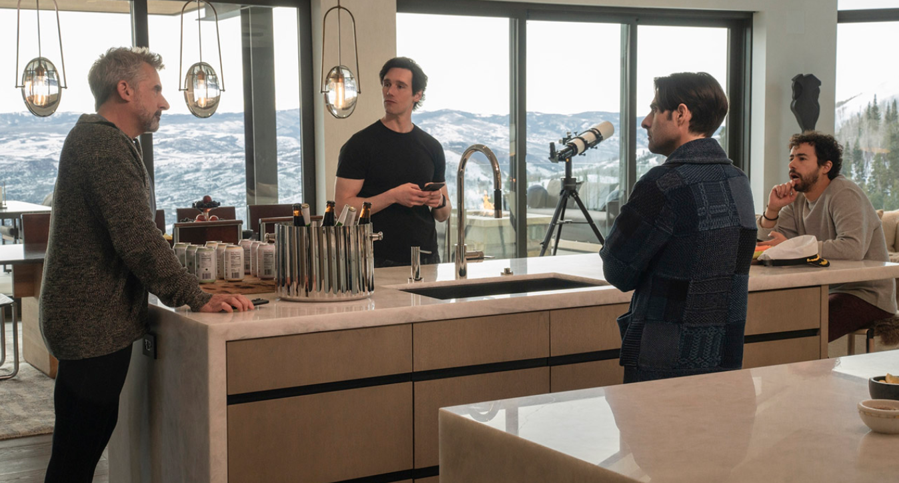
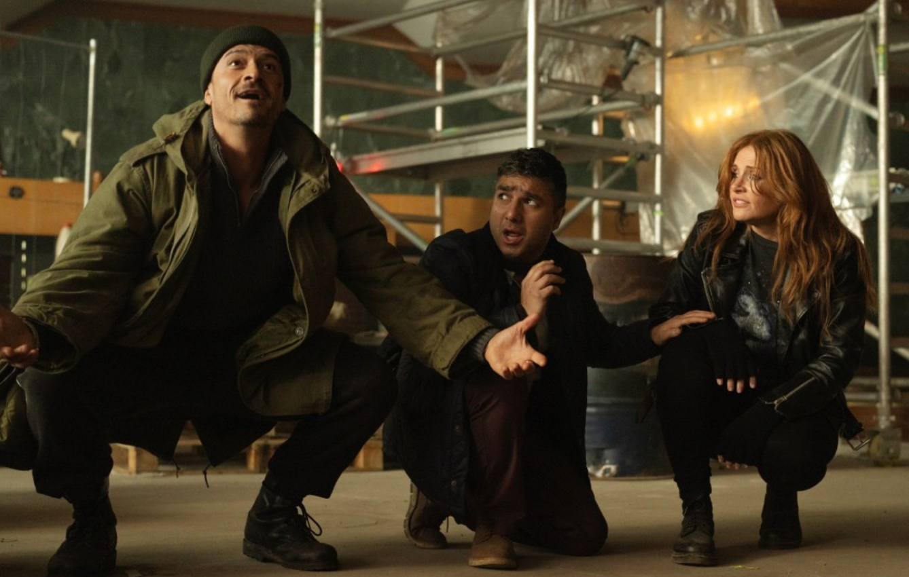
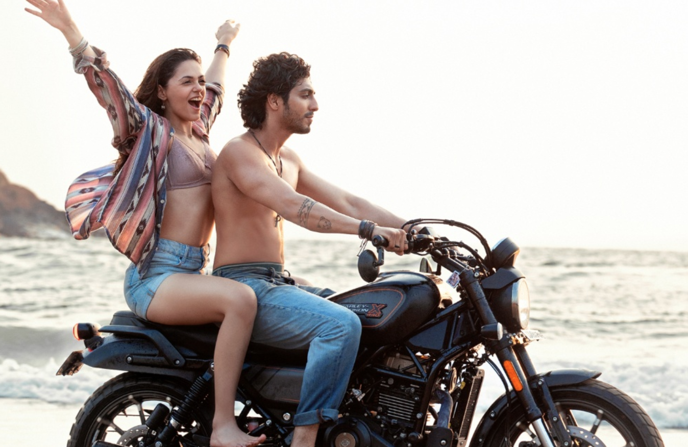
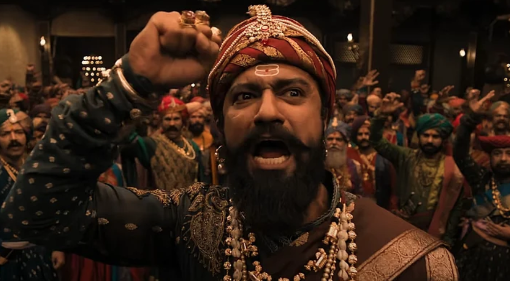

Alas, I’m not press and still haven't had the pleasure of seeing Marty Supreme as yet (Monday!), a film with strong potential to sneak into my top twenty or even top ten given the positive hubbub, so I’m putting off a ‘best of the year’ list until early January. After a fairly dismal start and summer, the year has ultimately been a strong one for solid A/A- films. Who knows? I may go wild with a top 20. It’ll be calm again in January with months until the Oscars, as good a time as any to recommend the films worth catching up on so you can be excited/disappointed when your favorites are awarded or snubbed. I’m fairly confident that what few gaps in my 2025 release viewing (up to 135 features as of publishing) are films ~worth~ catching up with, so the bottom ten are unlikely to change. Please join me in a wee kvetch about the films I didn’t walk out of with the most room for improvement, in descending order…  Ten – Mountainhead Jesse Armstrong’s efforts here are unconvincing from beginning to end. Perhaps a cast of comedians wasn’t the right strategy for this farce? Maybe straight actors acting buffoonish could have inspired one chuckle? Steve Carrell playing serious has never worked for me, Jason Schwartzman plays a fine cuck twerp but the fun had at his expense is mostly mirthless, Cory Michael Smith and Ramy Youssef are also present for the tension-free ‘apocalyptic’ global catastrophe of… maybe too many folks are publishing fake videos online? Question mark? Reeks of high school kids planning a heist. Never as funny as Succession as we haven't the time to develop any affection for these cardboards cutouts. Tricky too when the useless agelast wealthy are your protagonists and you don't have the guts to provide any catharsis (heads rolling). Nine – Opus There's a long sequence in the middle of the film in which (spoilers if you've watched no fiction ever in your life, I guess) the central pop idol or... cult leader?! played by John Malkovich puts on a live performance of his years-in-the-making new album for a captive audience. We're meant to believe this is a Bowie but Bigger figure who's been a recluse for ages and that the audience of intrigued invitees (aspiring young journalist Ayo Edebiri among them) are wowed by this swirling interminable performance and that both the special guests and the regular members of the artist's campus tolerate or enjoy the man's interminable mealtime speechifying ("philosophizing"). Goes exactly where you might think in the least satisfying manner. We invited a journalist for a reason. Eight – Nobody 2 Bob Odenkirk stars in this family-focused action sequel that I could barely have found more wooden, astonishing knowing the guy's range as a performer and skills as a comedic mind. In front of the camera only for this one, alas~ There's one fairly thrilling and funny action sequence midway through the film featuring a fight on a DUKW that looks like a duck? I think the idea here was to aim for National Lampoon's Family Vacation with breaks for hand-to-hand combat, but it watched like a bad TV sitcom too often.  Seven – Shelby Oaks I had no awareness of Chris Stuckmann prior to watching his debut film, shown as a 'Scream Unseen' Monday night surprise showing at AMC, apparently a long-time horror critic with a base of fans on YouTube (I'm told, but would never look into that black hole myself). While his pick of cinematographer paid off and the atmosphere of this found-footage film was occasionally quite effective, it's mostly a snoozefest! In short, a woman with a paranormal activity show disappears and is then the subject of a search. Not a poor premise, but fails to frighten. Six – Sikandar It ~is~ my own fault for going to a Salman Kahn starrer in TYOOL 2025 but WOOF. Kahn loses his pregnant wife in a *Big Dumb Explosion* and then becomes the guardian angel to the various people in Mumbai who receive her donated lungs eyes, and heart. Yes, this is a social commentary film, with punching, where one of the most reviled actors in Bollywood is framed as a hero. Interminable and joyless. For a Good Bad Bollywood actioner, please direct your eyes instead to WAR 2 (Hrithik and Jr. NTR will do ya right). Five – Deep Cover Buffoons get over their head and are meant to use the power of YES, AND to get out of the sticky situation they get into? Yawn. I do actually adore improv comedy more than most live performances when the energy is right (for a good time please check Raaaatscraps at Caveat) and found this an insult to the form. Bryce Dallas Howard, Orlando Bloom and Nick Mohammed! Do better. For a great film where a pair consistently find themselves in trouble and ACTUALLY use improv to get out of situations, please check The Baltimorons, a film whose praises I'll sing in January.  Four – Captain America: Brave New World I wanted to enjoy Harrison Ford as a president who gets mad. I wanted to see Tim Blake Nelson do anything interesting. I wondered why exactly Giancarlo Esposito was shoehorned into this to do... nothing? I hope the best for Anthony Mackie as he waits for his contract with Marvel to expire. I'm not surprised that the film's one scene featuring Sebastian Stan, also not particularly relevant to the film's narrative, was its best. I don't think I'll ever have a thought about this film again. Three – Saiyaara There's little I love more than an overlong romance peppered with songs~ I wish Hollywood wasn't full of COWARDS and that we made OUR finest actors sing and dance for us more often. This features the least likeable BAD BOY you could imagine and a woman with the least plausible malady trying to fix him. The fights in Letterboxd comments on this film are among the most contentious I've seen this year, with mostly men defending the scumbag at its center. "Look at his growth!" Our leads are by no means terrible, but the plot around them is unbelievable in that internally inconsistent way rather than the wondrous oeniric that I'll gladly give a pass to any day. Two – Death of a Unicorn Can you imagine a charmless AND humorless Paul Rudd? I couldn't have. Maybe he's worse in How Do You Know? I've heard that's a stinker for the ages, but this is too. Watches like a film that started as a theme with plot built around it. This is not how to make a worthwhile fiction. The film on this list whose genesis I'm most interested in learning about despite never wanting to see the thing again. How ~does~ this get made...  One – Chhaave Laxman Utekar's historical action epic plays like a trailer the whole way through. I think he's trying to do a The Passion of the Christ thing, but it doesn't work. Joyless and repetitive. |


Thursday - Free Tasting! Friday - Free Tasting! Saturday - Free Tasting! 
|